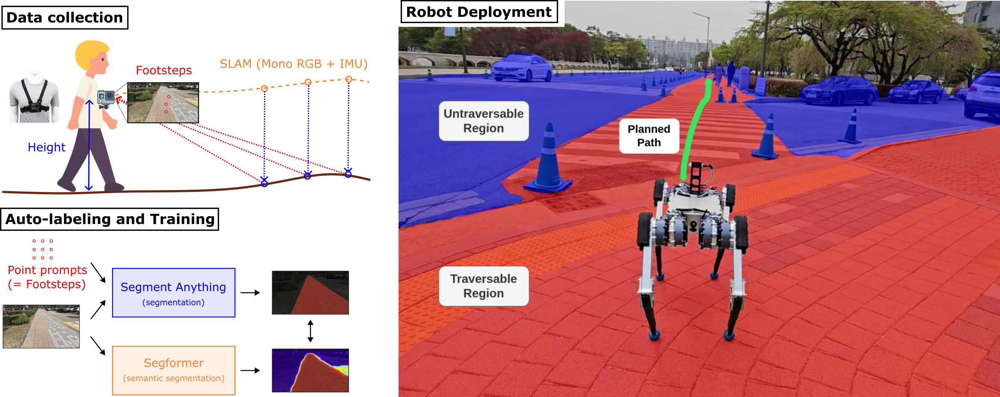

Yunho Kim* (1, 2)Jeong Hyun Lee* (1)Choongin Lee (1)Juhyeok Mun (1) Donghoon Youm (1)Jeongsoo Park (1)Jemin Hwangbo (1)
(1) Korea Advanced Institute of Science and Technology (KAIST)(2) Neuromeka
* indicates equal contribution

Abstract
For reliable autonomous robot navigation in urban settings, the robot must have the ability to identify semantically traversable terrains in the image based on the semantic understanding of the scene.
This reasoning ability is based on semantic traversability, which is frequently achieved using semantic segmentation models fine-tuned on the testing domain.
This fine-tuning process often involves manual data collection with the target robot and annotation by human labelers which is prohibitively expensive and unscalable.
In this work, we present an effective methodology for training a semantic traversability estimator using egocentric videos and an automated annotation process.
Egocentric videos are collected from a camera mounted on a pedestrian's chest.
The dataset for training the semantic traversability estimator is then automatically generated by extracting semantically traversable regions in each video frame using a recent foundation model in image segmentation and its prompting technique.
Extensive experiments with videos taken across several countries and cities, covering diverse urban scenarios, demonstrate the high scalability and generalizability of the proposed annotation method.
Furthermore, performance analysis and real-world deployment for autonomous robot navigation showcase that the trained semantic traversability estimator is highly accurate, able to handle diverse camera viewpoints, computationally light, and real-world applicable.
@ARTICLE{kim2024egoSemTrav,
author={Kim, Yunho and Lee, Jeong Hyun and Lee, Choongin and Mun, Juhyeok and Youm, Donghoon and Park, Jeongsoo and Hwangbo, Jemin},
journal={IEEE Robotics and Automation Letters},
title={Learning Semantic Traversability With Egocentric Video and Automated Annotation Strategy},
year={2024},
volume={9},
number={11},
pages={10423-10430},
keywords={Semantics;Robots;Cameras;Annotations;Navigation;Training;Semantic segmentation;Data collection;Visualization;Robot vision systems;Deep learning for visual perception;semantic scene understanding;vision-based navigation},
doi={10.1109/LRA.2024.3474548}
}